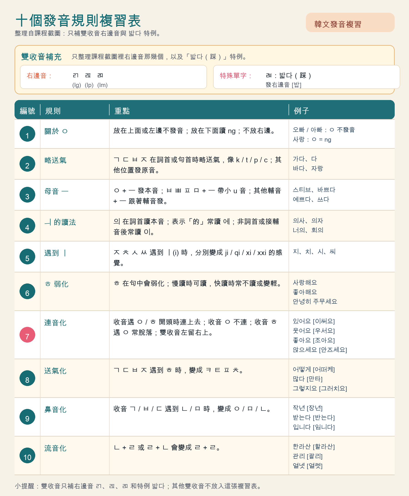

한
한 걸음一步一步學韓文
TODAY'S KOREAN
今天也學一點，
한 걸음 就好。
從生活中最常用的韓文開始，建立你的第一個句子。
🔊 語音設定：選擇手機的韓語聲音
正在讀取裝置的韓語語音…
LEARNING MAP
學習地圖
1 / 10
問候
안녕하세요
annyeonghaseyo
VOCABULARY
核心單字
點擊喇叭，聽聽韓國人怎麼說。
「中文近似音」只當記憶提示；真正發音請以韓語 TTS 和規則練習為準。⌕
言趣 KOREAN CLASS
言趣課程複習
把目前匯入的言趣教材整理成三個小單元，一次複習一小段。
課程進度0 / 63 個單字已開始
0 / 63 已掌握REVIEW PATH
照這個順序複習
小提醒
先聽韓語，再看中文意思；遇到不熟的字卡選「有點難」，明天會更容易找到它。
PRONUNCIATION REVIEW
發音規則複習
複習卡放在最上面，點例字就能聽發音。
REVIEW CARDS
規則複習卡
先從雙收音補充開始，再複習 10 個發音規則。
FULL TABLE
完整複習表

HANGUL 101
諺文字母
韓文不是一個個字母排開，而是組成一個個音節方塊。
音節組字ㅎ + ㅏ + ㄴ = 한
初聲 + 中聲 +（可選）終聲
表格中的 g/k、d/t 是羅馬字標記，不是要照英文硬讀；初學時先聽喇叭，再觀察它在字首或 받침 的位置。
받침｜收尾音
字尾不是每個子音都能直接保留原音；一般音節末會收斂成七個代表音，遇到母音、ㅎ、ㄴ／ㅁ 時還可能連音或變音。
BEGINNER GRAMMAR
初級文法
先掌握韓文句子的骨架，再慢慢加上細節。
USEFUL PATTERNS
實用句型
把剛學的單字放進句子裡，馬上就能用。